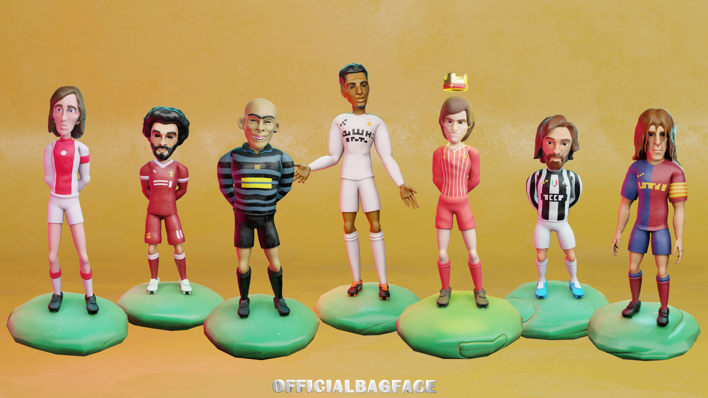
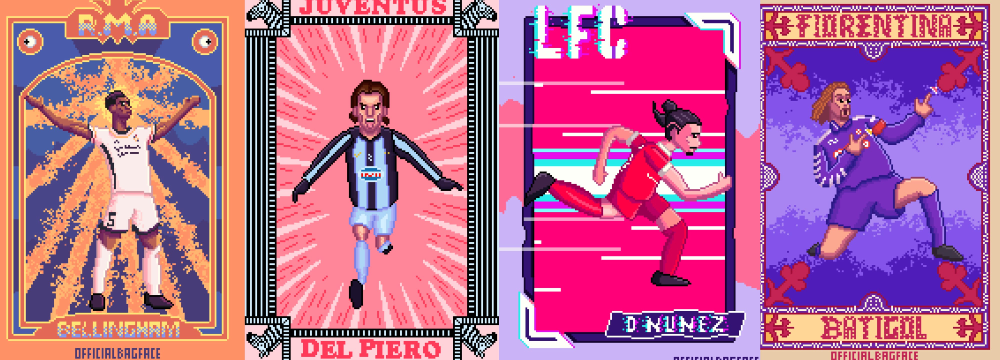
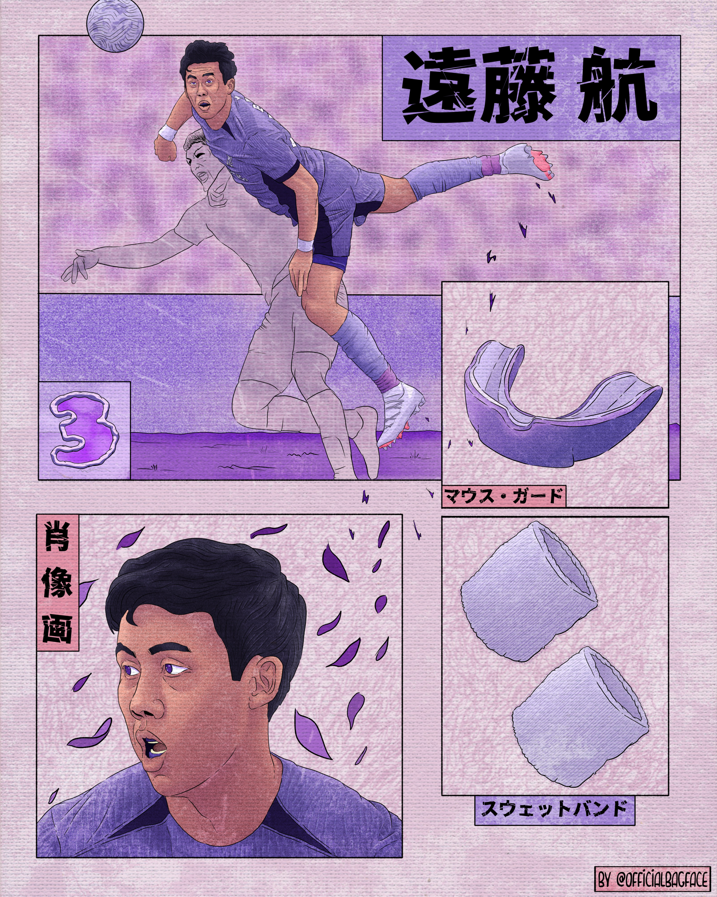
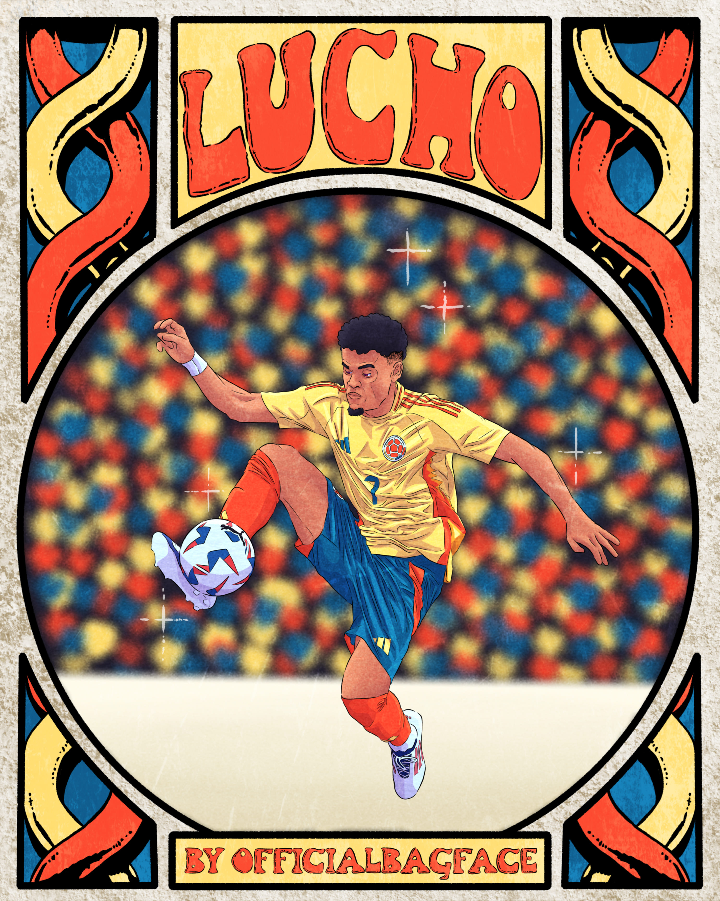
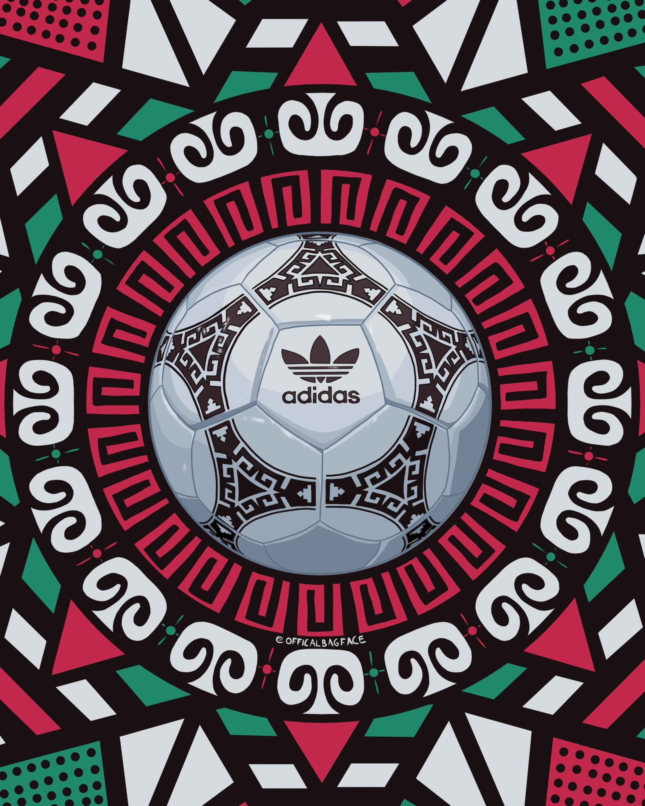
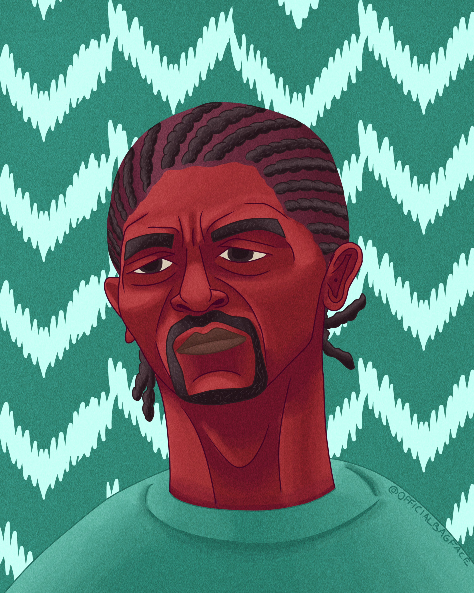

3D Sculpts, Models
and Animations

A collection of personal 3D work which includes sculpts that are textured, rigged and animated as well as models that are textured and animated as well.
Everything in this showreel is done using Blender. A mixture of claymation and semi realistic figurines was the objective for most of these
animations.

A showreel of more than a year's work of pixel art animations. The objective was to create animated card designs of players
performing run cycle, iconic celebrations or idle animations. A unique way of bringing past or present players to life using
an nostalgic art form.

A poster created to recap Mo Salah's 2023/24 football season. The frames of each illustration are inspired by traditional egyptian and arabic
art to pay homage to the egyptian king. The use of pinks and reds is heavy in this piece to keep a consitent theme and palette which helps
the four illustrations blend well and combine in a single piece.

A poster created of Wataru Endo inspired by ancient Japanese art. Heavy use of purples to keep a consistent theme and palette
matching with the kit worn. A portrait, full body, and illustrations of accessories used by Wataru combine together to create a single piece.

A month's work covering some of the key moments and players of the interantion tournaments of the 2024 summer. Starting off with some pixel
art animations pre tournaments and then a collection of vibrant and colorful illustrations covering some of my favorite teams
and performers throughout the month.

A collection of unique posters of some of the most iconic footballs used in history. The themes used are mostly inspired by
a host nation or city, a dominant color, an occasion or some design aspects within the ball itself.

A selection of stylized portraits covering some past and present football players mixed with some vibrant, colorful and culturally inspired
background.